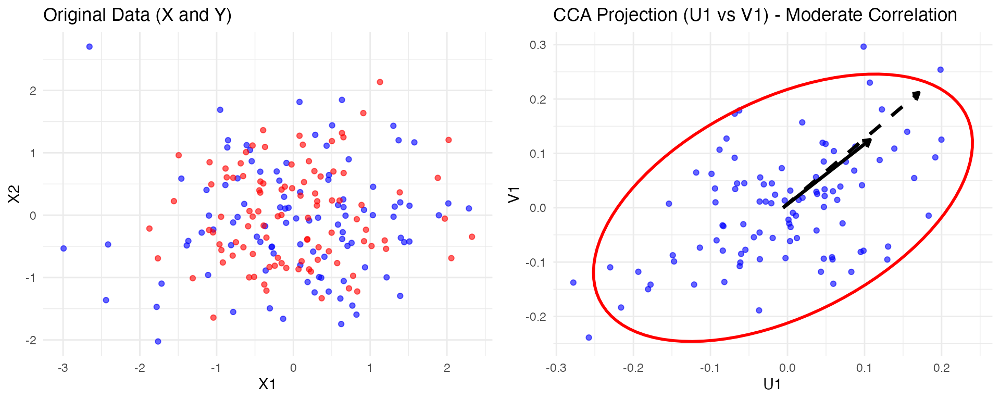
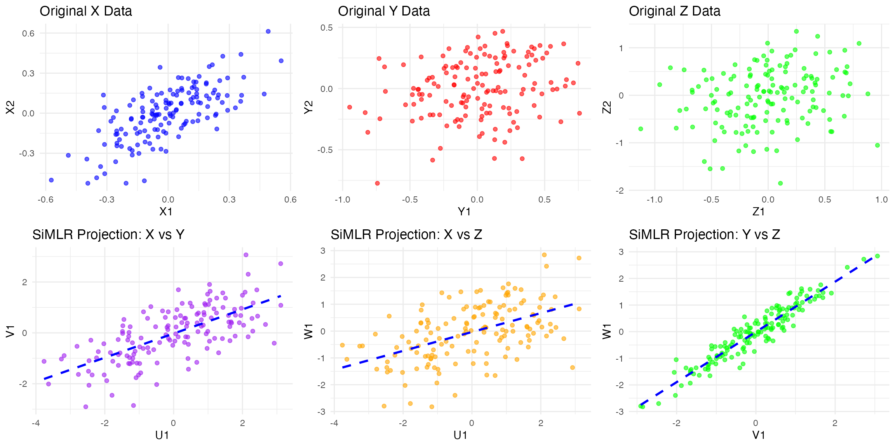

PCA, CCA and SiMLR: simple examples from simulated data
Brian B. Avants
2/5/2025
Source:vignettes/pca_cca_simlr.Rmd
pca_cca_simlr.RmdPCA
• Ellipse: Represents the data spread based on its covariance structure.
• Principal Component Vectors:
• Solid black arrow for PC1 (explains the most variance).
• Dashed black arrow for PC2 (orthogonal to PC1).This gives an intuitive visualization of PCA in action.
##
## Attaching package: 'ellipse'## The following object is masked from 'package:graphics':
##
## pairs
library(ANTsR)## Warning: replacing previous import 'stats::filter' by 'dplyr::filter' when
## loading 'ANTsR'## ANTsR 0.6.1
## Environment variables set either in .Renviron or with a seed (e.g. XXX):
## Sys.setenv(ANTS_RANDOM_SEED = XXX)
## Sys.setenv(ITK_GLOBAL_DEFAULT_NUMBER_OF_THREADS = 1)
## may influence reproducibility in some methods. See
## https://github.com/ANTsX/ANTs/wiki/antsRegistration-reproducibility-issues
## for more information.Also see *repro methods in antsRegistration.##
## Attaching package: 'ANTsR'## The following objects are masked from 'package:stats':
##
## sd, var## The following objects are masked from 'package:base':
##
## all, any, apply, max, min, prod, range, sum## Warning: replacing previous import 'ciTools::add_ci' by 'gtsummary::add_ci'
## when loading 'subtyper'## Warning: replacing previous import 'dplyr::as_data_frame' by
## 'igraph::as_data_frame' when loading 'subtyper'## Warning: replacing previous import 'dplyr::groups' by 'igraph::groups' when
## loading 'subtyper'## Warning: replacing previous import 'dplyr::union' by 'igraph::union' when
## loading 'subtyper'## Warning: replacing previous import 'gtsummary::add_ci' by 'ciTools::add_ci'
## when loading 'subtyper'## Registered S3 methods overwritten by 'fmsb':
## method from
## print.roc pROC
## plot.roc pROC## Warning: replacing previous import 'gt::gt' by 'globaltest::gt' when loading
## 'subtyper'## Warning: replacing previous import 'dplyr::rename' by 'plyr::rename' when
## loading 'subtyper'
library( simlr.nhanes )
# Generate sample data
set.seed(42)
data <- matrix(rnorm(200), ncol = 2)
data <- data %*% matrix(c(1, 0.4, 0.6, 1), ncol = 2) # Introduce correlation
df <- as.data.frame(data)
colnames(df) <- c("Feature1", "Feature2")
# Perform PCA
pca_result <- prcomp(df, center = TRUE, scale. = TRUE)
# Get mean of the data
center_x <- mean(df$Feature1)
center_y <- mean(df$Feature2)
# Get principal component vectors (scaled for visualization)
pc1 <- pca_result$rotation[,1] * sqrt(pca_result$sdev[1]) * 2
pc2 <- pca_result$rotation[,2] * sqrt(pca_result$sdev[2]) * 2
# Generate ellipse to fit the data
ellipse_data <- as.data.frame(ellipse(cov(df), centre = colMeans(df)))
colnames(ellipse_data) <- c("Feature1", "Feature2") # Rename for ggplot compatibility
# Plot PCA results with ellipse and principal component vectors
ggplot(df, aes(x = Feature1, y = Feature2)) +
geom_point(color = 'blue', alpha = 0.6) + # Scatter plot of data
geom_path(data = ellipse_data, aes(x = Feature1, y = Feature2), color = 'red', linewidth = 1) + # Elliptical fit
annotate("segment", x = center_x, y = center_y,
xend = center_x + pc1[1], yend = center_y + pc1[2],
arrow = arrow(length = unit(0.2, "cm")), color = "black", linewidth = 1.2) + # PC1
annotate("segment", x = center_x, y = center_y,
xend = center_x + pc2[1], yend = center_y + pc2[2],
arrow = arrow(length = unit(0.2, "cm")), color = "black", linewidth = 1.2, linetype = "dashed") + # PC2
ggtitle("PCA with Elliptical Fit and Principal Component Axes") +
theme_minimal()
First plot the original data (X1, X2 vs. Y1, Y2) and then display the transformed low-dimensional projections (U1 vs. V1 from CCA).
##
## Attaching package: 'gridExtra'## The following object is masked from 'package:Biobase':
##
## combine## The following object is masked from 'package:BiocGenerics':
##
## combine
library(ellipse)
# Set seed for reproducibility
set.seed(42)
# Generate X (two independent variables)
X <- matrix(rnorm(200), ncol = 2)
# Generate Y with weaker dependence on X
Y <- X %*% matrix(c(0.3, 0.1, 0.1, 0.3), ncol = 2) + matrix(rnorm(200, sd = 0.8), ncol = 2)
# Convert to data frames
df_X <- as.data.frame(X)
df_Y <- as.data.frame(Y)
colnames(df_X) <- c("X1", "X2")
colnames(df_Y) <- c("Y1", "Y2")
# Perform Canonical Correlation Analysis (CCA)
cca_result <- cancor(df_X, df_Y)
# Compute the first canonical variates
U1 <- as.matrix(df_X) %*% cca_result$xcoef[,1] # First canonical variate for X
V1 <- as.matrix(df_Y) %*% cca_result$ycoef[,1] # First canonical variate for Y
# Create a dataframe for plotting
cca_data <- data.frame(U1 = U1, V1 = V1)
# Get centers
center_x <- mean(cca_data$U1)
center_y <- mean(cca_data$V1)
# Compute canonical correlation axes
cca_axis1_x <- cca_result$xcoef[,1] * 2
cca_axis1_y <- cca_result$ycoef[,1] * 2
# Generate ellipse for canonical variates
ellipse_data <- as.data.frame(ellipse(cov(cca_data), centre = colMeans(cca_data)))
colnames(ellipse_data) <- c("U1", "V1")
# Original Data Plot
p1 <- ggplot() +
geom_point(data = df_X, aes(x = X1, y = X2), color = 'blue', alpha = 0.6) +
geom_point(data = df_Y, aes(x = Y1, y = Y2), color = 'red', alpha = 0.6) +
ggtitle("Original Data (X and Y)") +
theme_minimal()
# CCA Projection Plot
p2 <- ggplot(cca_data, aes(x = U1, y = V1)) +
geom_point(color = 'blue', alpha = 0.6) + # Scatter plot of canonical variates
geom_path(data = ellipse_data, aes(x = U1, y = V1), color = 'red', linewidth = 1) + # Elliptical fit
annotate("segment", x = center_x, y = center_y,
xend = center_x + cca_axis1_x[1], yend = center_y + cca_axis1_y[1],
arrow = arrow(length = unit(0.2, "cm")), color = "black", linewidth = 1.2) + # First canonical axis
annotate("segment", x = center_x, y = center_y,
xend = center_x + cca_axis1_x[2], yend = center_y + cca_axis1_y[2],
arrow = arrow(length = unit(0.2, "cm")), color = "black", linewidth = 1.2, linetype = "dashed") + # Second canonical axis
ggtitle("CCA Projection (U1 vs V1) - Moderate Correlation") +
theme_minimal()
# Arrange plots side by side
grid.arrange(p1, p2, ncol = 2)
now three views
# Load necessary libraries
library(ggplot2)
library(gridExtra)
library(geigen)
# Set seed for reproducibility
set.seed(42)
nzsd=0.5
mync=c(2,225,350,1070)
mynz=c(0.1,0.2,0.3)
# Generate X (three independent variables)
latent <- matrix(rnorm(300, sd=0.25 ), ncol = mync[1])
X = matrix_from_latent( latent, mync[2], mynz[1] )
Y = matrix_from_latent( latent, mync[3], mynz[2] )
Z = matrix_from_latent( latent, mync[4], mynz[3] )
# Convert to data frames
df_X <- as.data.frame(X)
df_Y <- as.data.frame(Y)
df_Z <- as.data.frame(Z)
colnames(df_X) <- paste0("X",1:ncol(X))
colnames(df_Y) <- paste0("Y",1:ncol(Y))
colnames(df_Z) <- paste0("Z",1:ncol(Z))
# --- GCCA Computation ---
data_list <- list(as.matrix(df_X), as.matrix(df_Y), as.matrix(df_Z))
# Compute covariance matrices
cov_matrices <- lapply(data_list, cov)
inv_cov_matrices <- lapply(cov_matrices, function(C) solve(C + diag(1e-4, ncol(C)))) # Regularization
regs <- regularizeSimlr(data_list,fraction=0.15,sigma=rep(1.0,3))
initu=initializeSimlr( data_list, k=20 )
if ( ! exists( "result2" ) ) {
result2 <- simlr(data_list,regs, iterations=100,
sparsenessQuantiles=rep(0.5,length(data_list)),
positivities=rep("positive",length(data_list)),
energyType='regression',
mixAlg='ica',
initialUMatrix=initu, verbose=T)
}## [1] "Grassmann" "1000" "1000"
## [1] " <0> BUILD-V <0> BUILD-V <0> BUILD-V <0> BUILD-V <0> "
## [1] "initialDataTerm: 329.31923774212 <o> mixer: ica <o> E: regression"
## [1] "Iteration: 1 bestEv: 1663.37594980775 bestIt: 1 CE: 1663.37594980775 featOrth: 0.0574581700786856"
## [1] "Iteration: 2 bestEv: 460.225826096704 bestIt: 2 CE: 460.225826096704 featOrth: 0.0624315670121713"
## [1] "Iteration: 3 bestEv: 398.328164197596 bestIt: 3 CE: 398.328164197596 featOrth: 0.098045075606608"
## [1] "Iteration: 4 bestEv: 377.391426113007 bestIt: 4 CE: 377.391426113007 featOrth: 0.0870630251121574"
## [1] "Iteration: 5 bestEv: 338.729151292431 bestIt: 5 CE: 338.729151292431 featOrth: 0.063084066874296"
## [1] "Iteration: 6 bestEv: 326.663753086588 bestIt: 6 CE: 326.663753086588 featOrth: 0.0529397737347828"
## [1] "Iteration: 7 bestEv: 324.098321990624 bestIt: 7 CE: 324.098321990624 featOrth: 0.0466995164233376"
## [1] "Iteration: 8 bestEv: 312.668526155087 bestIt: 8 CE: 312.668526155087 featOrth: 0.0430904732886398"
## [1] "Iteration: 9 bestEv: 312.668526155087 bestIt: 8 CE: 316.016894239302 featOrth: 0.0413436559166392"
## [1] "Iteration: 10 bestEv: 312.668526155087 bestIt: 8 CE: 315.610880010527 featOrth: 0.0390310141508776"
## [1] "Iteration: 11 bestEv: 310.06345695638 bestIt: 11 CE: 310.06345695638 featOrth: 0.0372747491659721"
## [1] "Iteration: 12 bestEv: 308.925680419723 bestIt: 12 CE: 308.925680419723 featOrth: 0.036471201733324"
## [1] "Iteration: 13 bestEv: 308.925680419723 bestIt: 12 CE: 309.07952492484 featOrth: 0.0351851000560248"
## [1] "Iteration: 14 bestEv: 307.956950662808 bestIt: 14 CE: 307.956950662808 featOrth: 0.0349259293602712"
## [1] "Iteration: 15 bestEv: 307.956950662808 bestIt: 14 CE: 308.064752711454 featOrth: 0.0347460312336913"
## [1] "Iteration: 16 bestEv: 307.46245147521 bestIt: 16 CE: 307.46245147521 featOrth: 0.0344789823143936"
## [1] "Iteration: 17 bestEv: 306.554960327679 bestIt: 17 CE: 306.554960327679 featOrth: 0.0342434996407052"
## [1] "Iteration: 18 bestEv: 306.554960327679 bestIt: 17 CE: 306.710928729985 featOrth: 0.0340238602266692"
## [1] "Iteration: 19 bestEv: 306.554960327679 bestIt: 17 CE: 308.318142506608 featOrth: 0.0340443976701152"
## [1] "Iteration: 20 bestEv: 306.554960327679 bestIt: 17 CE: 308.318142506608 featOrth: 0.0340443976701152"
## [1] "Iteration: 21 bestEv: 306.554960327679 bestIt: 17 CE: 308.318142506608 featOrth: 0.0340443976701152"
## [1] "Iteration: 22 bestEv: 306.554960327679 bestIt: 17 CE: 308.318142506608 featOrth: 0.0340443976701152"
## [1] "Iteration: 23 bestEv: 306.554960327679 bestIt: 17 CE: 308.318142506608 featOrth: 0.0340443976701152"
pred2 <- predictSimlr(data_list, result2)
U_X <- data_list[[1]] %*% (result2$v[[1]])
U_Y <- data_list[[2]] %*% (result2$v[[2]])
U_Z <- data_list[[3]] %*% (result2$v[[3]])
# Create a dataframe for visualization
gcca_data <- data.frame(U1 = U_X[,1], U2 = U_X[,2],
V1 = U_Y[,1], V2 = U_Y[,2],
W1 = U_Z[,1], W2 = U_Z[,2])
# X vs Y
p_XY <- ggplot(gcca_data, aes(x = U1, y = V1)) +
geom_point(color = 'purple', alpha = 0.6) +
ggtitle("SiMLR Projection: X vs Y") +
geom_smooth(method = "lm", color = "blue", linetype = "dashed", se = FALSE) + theme_minimal()
# X vs Z
p_XZ <- ggplot(gcca_data, aes(x = U1, y = W1)) +
geom_point(color = 'orange', alpha = 0.6) +
ggtitle("SiMLR Projection: X vs Z") +
geom_smooth(method = "lm", color = "blue", linetype = "dashed", se = FALSE) + theme_minimal()
# Y vs Z
p_YZ <- ggplot(gcca_data, aes(x = V1, y = W1)) +
geom_point(color = 'green', alpha = 0.6) +
ggtitle("SiMLR Projection: Y vs Z") +
geom_smooth(method = "lm", color = "blue", linetype = "dashed", se = FALSE) + theme_minimal()
# --- Original Data Plots ---
# X Data
p_X <- ggplot(df_X, aes(x = X1, y = X2)) +
geom_point(color = 'blue', alpha = 0.6) +
ggtitle("Original X Data") +
theme_minimal()
# Y Data
p_Y <- ggplot(df_Y, aes(x = Y1, y = Y2)) +
geom_point(color = 'red', alpha = 0.6) +
ggtitle("Original Y Data") +
theme_minimal()
# Z Data
p_Z <- ggplot(df_Z, aes(x = Z1, y = Z2)) +
geom_point(color = 'green', alpha = 0.6) +
ggtitle("Original Z Data") + theme_minimal()
# Arrange the plots: GCCA and Original Data
grid.arrange(p_X, p_Y, p_Z, p_XY, p_XZ, p_YZ, ncol = 3)## `geom_smooth()` using formula = 'y ~ x'
## `geom_smooth()` using formula = 'y ~ x'
## `geom_smooth()` using formula = 'y ~ x'